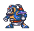
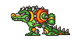
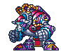
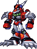

SNES · 16 upgrades
Mega Man X

Start with the dash. Follow the weakness chain, complete three return stops, then unlock Hadouken.
Boss routes, every permanent pickup, and the decisions that matter before you pass them. Choose your game.

Start with the dash. Follow the weakness chain, complete three return stops, then unlock Hadouken.

Choose the standard route or restore Zero. The red checkpoint catches the parts detour before it is too late.

All four Ride Armors, the Gold Armor decision, and the Vile detour required for Zero’s saber.

Separate orders and pickup instructions for X and Zero. Includes Ultimate Armor and Black Zero starts.